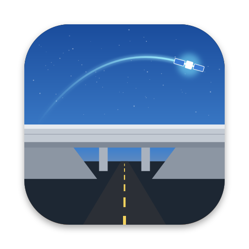
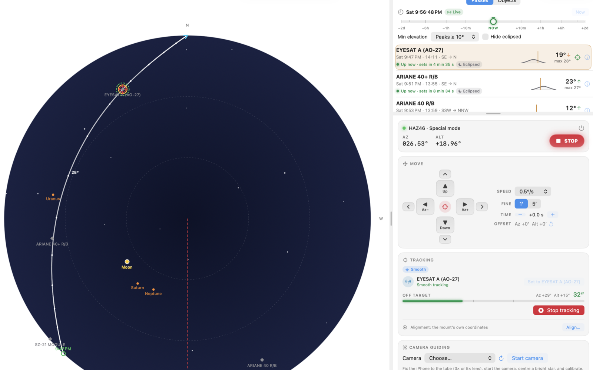

For the longest time I have been running Heavenscape SkyTrack on a Windows laptop to drive my iOptron strain-wave mounts. It works, but it meant keeping a Windows machine alive for one job, and that machine was always the one that wanted an update on a clear night. Overpass is the native macOS and iOS replacement.

Smooth tracking EYESAT A (AO-27) on a HAZ46 over USB, 32″ off target while it caught up.
SGP4 prediction from CelesTrak groups, your own URLs or local TLE files, with the age of each source shown. Filter by peak elevation, duration, visibility, distance from the Sun and whether the mount can keep up. A time bar moves the sky up to two days either way, and the mount will follow it if you want to rehearse a pass in daylight.
Set the azimuth the mount must never rotate through and every slew and pass is planned around it, going the long way round when it has to. Over-the-top flips are there for passes close to the zenith.
Space station transits of the Moon and Sun around any place you choose, out to two weeks, on a map with the band where the transit is visible and the time along its centreline. Watched events refresh their elements and recalculate as the day gets closer.
A pass calculator out to fourteen days for any object, star alignment, camera guiding with an iPhone through Continuity Camera, and a red night-vision mode.
WiFi uses iOptron's normal command set on the mount's own network. USB uses Special Mode, which only works over USB; on a Mac the HAZ46 cable appears as /dev/cu.PL2303G-USBtoUART210. An iPhone or iPad needs a relay on the mount's USB port, such as a Raspberry Pi running ser2net.
iOptron's Special Mode documentation stops short of a few things that matter, so this is what the mount actually does.
:GAC# in Normal mode reads az 0°, alt 0° until the mount is aligned again.:ZZZ# the mount says nothing for about a second while it changes modes, and anything asked in that second times out.Satellite positions come from SGP4 through SatelliteKit, with one correction. SatelliteKit 2.1.2 reads the exponent of the TLE drag term as a character code, so every satellite had its drag set to about 10−52 and low orbits ran late by roughly 0.6 s a day after epoch and 200 s after two weeks. That explained a few things. Overpass now reads the TLE columns itself. The bug is reported upstream as SatelliteKit #16, with a one-line fix in #17.
| Checked against | What | Agreement |
|---|---|---|
| Reference SGP4 (Vallado, as used by Skyfield) | Vanguard 1, and the ISS a week after epoch | within 10 m |
| transit-finder.com, same TLEs | 14 ISS and Tiangong transits of the Moon and Sun around Griffith Observatory over two weeks | 0.13 s · 0.5 km · 4% width |
| Meeus, Astronomical Algorithms | Sun, Moon and planet positions | worked examples |
None of this makes a TLE more accurate than it is. ISS reboosts move events by seconds, which is why watched conjunctions refresh their elements.
The WiFi connection, Passive tracking of the Moon, Step tracking, USB Special Mode and Smooth tracking at about 2″.
The iOS build, the USB relay, camera guiding, the route around the cable stop, and the fix for the 5 second timing glitch, which I ran out of battery before trying.
The Xcode project is generated from project.yml, and the tests run with Swift Package Manager.
git clone https://github.com/djsincla/Overpass.git
cd Overpass
xcodegen
open Overpass.xcodeproj
swift testYou will need your own signing team in project.yml. Read the cable stop settings before you trust the app with your cabling; a mount that slews into its own tripod is still your problem.